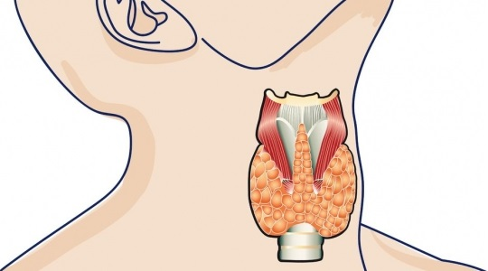

Щитовидна залоза — є одним з найважливіших органів внутрішньої секреції. Вона виробляє два гормони (тироксин і трийодтиронін), які беруть участь у регуляції обміну речовин і виробляють енергію, необхідну для роботи всіх систем і органів нашого організму. На їх рівень впливає тиреотропний гормон гіпофіза.
Коли рівень секреції тиреоїдних гормонів змінюється, розвиваються патологічні порушення. При цьому страждають всі системи і органи. До основних захворювань щитовидної залози відносяться: тиреоїдит, мікседема, базедова хвороба, рак, аденома і т. д.
Причини захворювання щитовидної залози:
- психологічні та емоційні перевантаження;
- неправильне і незбалансоване харчування, внаслідок чого організм відчуває нестачу мікроелементів і вітамінів;
- радіоактивна обстановка і несприятлива екологічна ситуація;
- хронічні захворювання.
Класифікація захворювань щитовидної залози залози
Залежно від характеру розвитку аутоімунні захворювання щитовидної залози можна класифікувати на
— ті, які супроводжуються недоліком вироблення гормонів (гіпотиреоз)
— ті, які супроводжуються надмірним продукуванням гормонів (гіпертиреоз)
— руйнування тканини щитовидної залози її власними клітинами (аутоімунний тіреіодіт).
Хвороби щитовидної залози
- Зоб. Загальний термін для збільшення щитовидної залози. Зоб може бути нешкідливим або може сигналізувати про недостатність йоду або про запалення залози (зоб Хасімото).
- Тиреоїдит. Запалення щитовидної залози, зазвичай через вірусної інфекції або аутоімунне. Тиреоїдит може бути болючим або взагалі не мати симптомів.
- Гіпертиреоз. Надлишкове вироблення гормонів щитовидної залози. Гіпертиреоз зазвичай викликаний базедової хворобою або гіперактивними вузлами щитовидної залози.
- Гіпотиреоз. Занадто низька кількість гормонів щитовидної залози. Зазвичай причиною гіпотиреозу буває пошкодження щитовидної залози в результаті аутоімунного захворювання.
- Базедова хвороба. Аутоімунне захворювання, при якому щитовидна залоза надмірно активна, що викликає гіпертиреоз.
- Рак щитовидної залози. Рідкісна форма раку, яка зазвичай виліковна. Для лікування використовують операції, опромінення та гормональну терапію.
- Вузол в щитовидній залозі. Невелике аномальне ущільнення, новоутворення. Вузли в щитовидній залозі зустрічаються часто. Лише деякі з них можуть стати злоякісними. Вони можуть виділяти зайві гормони, що веде до гіпертиреоз, або не викликати жодних проблем.
- Тіреотоксіческій криз. Рідкісна форма гіпертиреозу, при якій вкрай високий рівень гормонів щитовидної залози викликає важке захворювання.
Ознаки захворювань щитовидної залози залози
- Збільшення щитовидної залози. З’являється спочатку ледве помітна, потім яскраво виражена опухлість шиї. Область припухлості в більшості випадків безболісна на дотик і має нормальний здоровий вигляд.
- Виникнення задишки. Інтенсивний процес збільшення залози починає здавлювати трахею і призводить до нестачі надходження кисню до органів дихання, що і призводить до такого стану, як задишка. Хворий скаржиться на загальну слабкість і на утруднене дихання навіть при елементарних фізичних навантаженнях. Елементарний зітхання чи видих заподіює людині дискомфорт і тупий біль в області ураженого органу.
- Зміна голосу. При збільшенні розміру залози порушується нормальна робота прилеглих органів горла, від яких залежить нормальна робота гортані (голосові зв’язки). Нервові закінчення при таких патологіях пошкоджуються, імпульси від головного мозку не проходять так, як потрібно, ці фактори стають основною причиною зміни голосу або його повної відсутності.
- Порушення в роботі серця. Такий симптом нерідко є свідченням вже запущеного стану хвороби і у випадку гіпотиреозу має свої характерні прояви. Тобто при недоліку гормонів у людини виникає патологічне скорочення м’язів серця, яке і призводить до брадикардії — уповільнення серцебиття.
- Виникнення набряків. Порушення ритму серця супроводжується недостатнім потоком крові по всьому організму, що призводить до порушення обміну речовин і, відповідно, до набряків. Набряклість в основному спостерігається у вечірній час, а до ранку сама собою зникає.
- Знижена температура тіла є також симптомом гіпотиреозу. Погодьтеся, мало хто з нас звертає увагу на зниження температури тіла, багатьом здається, що тільки висока температура може свідчити про присутність небезпеки для здоров’я людини, але це не зовсім так. Якщо у вас все життя була нормальна температура тіла і раптом помічаєте різкий її спад протягом тривалого часу до цифр 36,0 — 36,1, в обов’язковому порядку на це варто звернути увагу і здатися ендокринолога.
- Виникають збої менструального циклу. Гормональний збій, звичайно ж, порушує і нормальну роботу жіночої сфери і нерідко стає основною причиною проблем із зачаттям дитини.
- Різке підвищення ваги. Хворий при гіпотиреозі часто різко і без всяких на те причин втрачає вагу. При цьому апетит значно знижується, у той час як вага інтенсивно збільшується.
- Зміна гормонального фону супроводжується різкими перепадами настрою, при нестачі гормонів людина стає флегматичним, загальмованим, не відразу відповідає на запитання.
- Шкіра людини також реагує на нестачу гормонів, стає сухою і лущиться.
- Витрішкуватість. Такий симптом притаманний людям, які мають вже запущені захворювання щитовидної залози. Симптом має зовні виражену яскраву особливість, яка проявляється зміною розміру очних яблук і слизової оболонки самих очей, шкіра повік при цьому темніє і має неприродний вигляд.
- Надмірна пітливість. Підвищена кількість гормонів в організмі нерідко супроводжується надлишком виділяється поту і, відповідно, постійною жагою. Людина покривається потім навіть при ходьбі, не кажучи вже про стресових ситуаціях, долоні стають пітними і вологими, іноді на тлі цього стану відзначають запаморочення.
- Різкі зміни настрою також можна віднести до симптому гіпертиреозу. При цьому недугу хворий зі стану повного спокою за лічені секунди може перейти в невиправдану лють. Настрій в основному дратівливе, постійно змінюється, така поведінка безпосередньо пов’язано з пошкодженням нервової системи людини.
- Шкіра та волосся також реагують на зміну гормонального фону людини. При гіпертиреозі шкіра тіла і області голови стає жирною, а волосся інтенсивно випадають.
Джерело : http://dovidka.biz.ua/